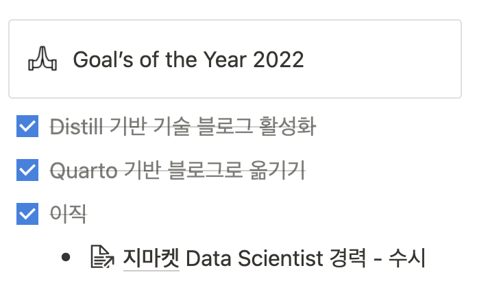

연간 회고록: 2022년
생각의 변화가 많았던 2022년을 회고합니다.
지난 한 해가 지나간지 얼마 채 되지도 않은 것 같은데, 어느덧 2월에 들어섰네요. 역시 시간은 우리를 기다려주지 않습니다. 이제서야 연간 회고록을 쓰는 저도 참..😂 연간 회고록은 커리어와 개인적인 부분을 나눠서 진행해보려고 해요. 이번 한 해는 제게 참 많은 변화가 있었어요. 기존에 가지고 있던 생각에도 변화가 참 많았습니다. 그 중심에는 학계에서 산업계로의 이직이 큰 몫을 한 것 같아요. 한 해 동안 느꼈던 바들을 한 번 잘 풀어서 써보겠습니다.
커리어
지난 1월에 포스팅했던 이직로그에서 말씀드렸듯이, 저는 작년 2월에 이직을 결심했고 9월부터는 G마켓의 Data Scientist 포지션에서 업무를 하게되었습니다. 눈 깜짝할 사이에 5달이라는 시간이 흘렀군요. 업무 적응은 아직 현재 진행형인 듯 합니다. 여전히 눈을 감고.. 코끼리 다리는 만지는 듯한.. 이른바 군맹무상의 상태인 듯 해요. 언제쯤 이 코끼리를 멀리서 크게 바라볼 수 있을까요?😭
5달 동안 정말 많이 배웠습니다. 기존에 가지고 있었던 생각의 변화도 많았고, 새로운 도구를 배우기도 했고요. 기억에 남는 키워드들을 가지고 논해보겠습니다. 마지막은 5개월 동안 겪은 우리팀의 분위기에 대해 적어볼게요.
Generalist? Specialist?
지금은 이 둘을 굳이 분간하고 싶지 않습니다. 그러나, 과거에 저는 이 글에서도 넌지시 밝혔듯이 Data Science 업계에서 살아남기 위해서는 Specialist가 되어야하지 않나 하는 생각을 가지고 있었어요. 그래서, 대학원 때도 100점짜리 하나를 가지고 나가기 위해 노력을 했고 이론적 측면에서는 시계열 자료분석, 소프트웨어 측면에서는 R이 그것에 해당했습니다. 이 둘에 대한 수준을 절대적인 기준의 높은 경지까지 끌어올렸다는 의미라기 보다는, 자신있다고 말할 수 있는 영역들을 만들어냈다고 봐주시면 감사할 것 같습니다. 대학원을 졸업하고 병원 연구센터에서 시계열 자료를 모델링하며 연구에 몰두할때만해도 이 생각에는 딱히 변화가 없었죠. 코끼리 다리를 만지는 듯한.. 느낌도 없었고, 업무 적응에 딱히 긴 시간이 걸리지도 않았으니까요.
그러나, G마켓으로 이직하면서 이 생각에는 많은 변화가 찾아왔습니다. 일단, 제가 모르는게 너무 많다는 생각을 했어요. 1년반정도 재직을 했던 첫 직장에서는 느껴보지 못한 어려움과 감정을 느꼈습니다. 당시 느꼈던 감정이 잘 녹아있는 페이스북 포스팅입니다.
100점짜리 하나를 가지고 나가기 위해 노력했기에, 그 외에 영역에는 모르는 부분이 참 많았어요. 이때부터 조금씩 생각을 했습니다. 아.. 100점짜리 하나를 만들어 나가는 것 보다는 80점짜리를 3개 이상 만드는게 더 좋은 결정이었을 수도 있겠구나.
Specialist를 지향해왔던 저는 100점짜리 하나를 만들어서 나가야 한다는 생각에 아래로 뾰족한 ’전문 분야에 대한 깊은지식’만을 갖추는 데에 매몰되어있었습니다. 현 사회에서 요구하는 인재의 유형이라 할 수 있는 T자형 인재와는 거리가 꽤 멀었죠. 그리고, 이로 인한 어려움은 산업계로 이직을 하면서 피부로 느낄 수 있었습니다. 이러한 생각을 할때 즈음 신수정 님이 쓰신 <일의 격>에 이런 구절이 쓰여져 있더군요.
100점짜리 하나 보다는 80점 짜리를 3개 이상 만들어봐라.
제 무릎을 탁 치게되는 구절이었습니다. 여기서 2가지 일화를 더 겪으면서 제가 학부생, 대학원생 때 지향했던 바가 조금 잘못되었구나를 확신했어요. 첫 번째는 이직한지 한 달이 되던 무렵 선호님1과 저녁을 먹으면서 우연히 Generalist, Specialist에 대해 이야기를 나누면서 였고, 두 번째는 지난 12월에 팀 워크샵에서 실장님이 T자형 인재를 가지고 한 시간 정도 본인의 이런저런 의견을 이야기 해주시는 것을 들으면서 였어요. 일의 격의 구절, 선호님의 논지, 실장님의 논지는 크게 봤을 때 같은 이야기를 하고 있는 것 처럼 들렸어요. 이쪽 업계에서는 100점짜리 하나가 있는게 유리하다고 생각을 해왔던 제 생각과는 정반대의 결을 가진 생각으로 말이죠. 100점짜리 하나를 만들어야 한다는 생각이 어쩌면 저한테는 꽤 편했던 핑계2였던 것 같아요. 이제는 이런 생각을 버리고, 80점 짜리를 3개 이상 만들기 위해 이것 저것 재지않고 새로운 것을 배우려고 노력하고 있어요. 사회에 나온지 얼마 안된 시기에 이러한 생각의 전환을 이루어 낸 게, 참 행운이라고 생각하고 있어요.
R? Python?
자, 지겹고 무의미한 논쟁을 한번 꺼내 볼까요? 제가 가장 사랑하는 언어는 여전히 R이지만, 산업계에서 R이 차지하고 있는 파이를 직접 마주하고 나니 많은 생각을 하게 됐어요. R vs Python, 최근에는 Julia 까지 데싸 업계에서는 여전히 가장 감질맛 나는 떡밥이 아닌가 생각합니다
R과 Python을 비교하는 글은 언제나 꾸준히 올라왔습니다. 링크드인에도 이 떡밥은 종종 풀렸습니다. 해외에서도 뜨거운 주제였죠. 논쟁의 마무리에서 정답과 같은 중론은 “What’s your job?” 이었습니다. 당신이 풀고자 하는 문제가 무엇인지에 따라 두 언어를 선택하면 된다는 이야기죠. 이러한 중론에 저는 100% 동의했습니다. 예컨데, 딥러닝을 포함한 머신러닝을 위시한 예측 모델링에 꿈이 있는 사람이라면, Python을 택하여 공부하는게 아무래도 취업 시장에서 유리한 포지션을 가져갈 수 있겠죠? 저도 학부생, 대학원생 때 이 떡밥에 관심이 많았던 사람이라, 과거에 슬기로운 통계생활 블로그에 이와 관련한 주제로 글을 쓰기도 했어요. 아래 두 글은 꽤 중립적인 입장에서 두 언어를 비교하고 있다고 생각했던 글들이여서 가져와 봤어요.
이러한 중립적 관점에서 기술된 글과는 반대로, R과 Python을 막론하고 특정 언어를 찬양하며 다른 언어를 깎아내리는 글은 읽을 가치도 없고, 그 자체로 저자의 무지함을 드러내는 글이라 생각합니다. 장단점을 논할 순 있겠지만요.
산업계로 넘어와 조금 바뀐 제 생각은 페이스북에 적었던 아래 두 포스팅으로 갈음합니다. 첫 번째 포스팅을 요약하자면, 우리나라 업계의 Data Scientist로 활약하기를 꿈꾼다면 그냥 마음 편하게 Python을 하는게 낫지않나 하는 얘기에요. 이쪽 업계에 R 사용자가 차지하는 파이는 꽤 작아서 협업 중에 Python 유저로서는 겪지 않을 불편함을 R 유저들은 필연적으로 겪어야만 하거든요.
이제 지루한 논쟁에 정답을 내려드리겠습니다.
둘 다 하세요.
두 번째 포스팅은 R이 Native인 제가 Python을 다루며 했던 생각입니다. 요약하자면, Pandas는 Pandas 감성으로, tidyverse는 tidyverse 감성으로 다루자는 얘깁니다. 정답이 없는 부분이니, 가볍게 읽어주시면 좋을 듯 합니다.😀
Shiny? Streamlit?
예전부터 대시보드를 한 번 개발해보고 싶다는 생각을 쭉 해왔었습니다. G마켓에서 업무를 시작한지 두달이 조금 넘었을 무렵, 팀 내에서 개발하여 서비스하고 있는 추천 기술들의 몇몇 대표적인 성과 지표들을 모니터링할 목적으로 대시보드 개발이 필요로 된다는 이야기를 들었어요.
네, 제가 덮썩 물었습니다. 처음에는 개인적인 욕심으로 Shiny를 고려했었어요. 이정도면 R 짝사랑 그만해도 되겠죠? 그런데, 이 대시보드를 제가 평-생 유지보수 할 수 있다는 보장이 없으니, 적절하지 않은 도구였어요. 팀 내에 R 사용자가 없거든요. 사내에도 드물고.😭 여기서 욕심을 좀 더 부려서, 당시 나온지 세달? 네달?이 채 안된 Shiny for Python을 팀 내에 분석가 분들께만 먼저 제안해봤어요. 동의해주셨지만, 곰곰이 생각해보니 Python 기반으로 대시보드 개발할건데 굳이 왜 알파 버전에 불과하고 레퍼런스도 별로 없는 Shiny for Python을 쓰려고 하는지 문득 의문이 들었죠. 여기에 또 굳이 Quarto를 엮겠다고.. Python에는 더 좋은 선택지의 대시보드들이 많잖아요.
그래서, Streamlit과 Plotly의 Dash 둘 중에 깊은 고민을 하기 시작했어요. 우리팀에서 개발할 대시보드의 목적 상 많은 자유도가 필요로 되진 않았어요. 이 측면에서 Streamlit 보다 훨씬 다양한 기능들이 오픈되어 있는 Dash까지 고려할 필요가 있나 생각을 했죠. 그리고, Streamlit이 가볍고 빠르게 빌드할 수 있고, 기본 UI로도 충분히 요즘 감성에 맞게 이뻤기 때문에 더 끌렸어요. 그래서, 팀 내 대시보드 개발은 Streamlit으로 진행하기로 합니다.
Python은 R의 성숙도에 비해 훨씬 딸려서 조금 걱정하긴 했는데 개발하는 내내 재밌었어요. Pandas로 전처리하는 재미도 있었고요. siuba라는 패키지를 이용해서 tidyverse syntax랑 엮어서 pandas dataframe을 핸들링하는 재미도 있었고. 사실, 다 뻥이고요. R로 하면 그~음방 하는데 하는 생각이 머리 속을 떠나지 않았습니다.😂 Python을 조금 다룰 줄 아시고, 대시보드를 개발해보고 싶으시다고요? Streamlit으로 가볍게 시작해보세요. Streamlit에서 공식적으로 제공하는 30 Days of Steamlit으로 기본적인 기능들을 익히고, 아무 데이터나 가지고 무작정 시작해보세요. 참 쉽고 재밌는 툴입니다. 금방 실력이 느실거에요. 30 Days라 하지만 바짝하면 하루이틀이면 끝냅니다.😀 이것저것 재면 시작을 안하게 되요. 가볍게 시작해서 무식하게 끝내는 사람이 됩시다!
우리팀 분위기
5개월간 겪은 우리팀 분위기는 어땠냐고요?
대답은 유느님의 리액션으로 대신해봅니다. 제가 꿈꾸던 조직에 온 것 같아요. 우리팀에서 5개월 간 받은 느낌들을 짤막하게 적어볼게요.
팀원이 풀지 못하는 일은 곧 나의 일
- 각자 업무로 정말 바쁘시지만, 슬랙에 도움이나 정보를 요청하면 정말 다들 내 일처럼 붙어서 도와주십니다.
새로운 시도가 환영 받는 곳
- 이베이코리아로 시작해 현재 신세계 그룹에 편입된 지마켓이 있기까지 꽤나 이커머스에 역사가 있는 오래된 기업이죠. 그럼에도 불구하고, 우리팀에서 어떤 새로운 시도는 환영받는 분위기 입니다. 현재 전사적인 분위기도 동일하게 형성되어 있다고 생각합니다. 본 포지션에 지원할때 가장 큰 매력을 느꼈던 “인과추론에 대한 관심” 또한 이커머스 업계의 Data Science에서 아직까진 새로운 시도라고 보고 있습니다.
자율성, But 열정! 열정!
- 팀 분위기는 매우 자율적이에요. 다른 말로 자유롭다고 표현할 수도 있겠네요. 이러한 분위기와는 어울리지 않게 정말 다들 각자 맡은 일을 열정적으로 처리하십니다. 월급 받는만큼만 딱 일하는 분들이 아니라, 자신의 만족을 위해 일하는 분들! 항상 팀원 분들께 자극받고 있어요.
수평적인 분위기 그 자체
저만 이렇게 생각하는 건 아니겠죠? 제가 이 팀에 빌런은 아니겠죠?.. 써놓고 보니 갑자기 살짝 두렵네요.😂 이 글을 읽으실지는 모르시겠지만, 팀에 이런 분위기와 문화를 형성해준 선호님께 다시 한 번 감사의 말씀을 전합니다. 이런 좋은 환경에 부스팅을 받아서 2023년에는 더욱 정진하겠습니다.😀
개인적인
이제 개인적인 것들을 회고해볼게요.
목표 달성 여부
노션에 작성해두었던 2022년의 목표를 모두 달성할 수 있었던 뜻깊은 한해였습니다.

하지만, 여기에 적어 두지않은.. 꼭 습관을 만들자고 다짐’만’ 하던 것들을 적어봅니다. 올해 2월부터 달려갑니다. 제 1월은 어디갔죠?
책 읽기
- 2023년엔 작게라도 시작합시다. 한 달에 한 권씩!
영어 공부
- 아침에 일찍일어나서 영어 공부 한다고 다짐만 1년 했습니다. 하루 30분!
부동산, 증시, 경제 뉴스 읽기
- 아.. 이것도 습관을 안들이니 바쁘다는 핑계로 안하게 되네요. 하루 30분!
써놓고 보면 참 별 거 아닌 습관들인데, 당연하게 몸이 움직이도록 습관을 만들기란 참 어려운 것 같습니다. 올해는 꼭 실천하겠습니다. 커리어 방면의 목표는 개인 노션에 비밀리에 작성하고 2023년 회고록에서 나눠보겠습니다. 사실 아직 구체적으로 못정했어요. 몇 시간 날잡아서 고민하는 시간을 만들어야할 것 같습니다.
뽀모도로
현재 사무실 출근, 재택 근무를 혼합한 형태로 근무를 하는데, 아무래도 집에서 근무를 하면 조금 더 딴짓하게 되고 늘어지는 경향이 있더군요. 퇴근 후에 공부할 때는 더 그렇고요. 이를 지켜만 보고 있을 순 없었습니다. 그래서, 다시 뽀모도로 라는 방법으로 시간 관리를 하기 시작했습니다. 뽀모도로 방법을 요약해볼게요.
1 뽀모도로: 25분
쉬는시간: 5분
- 단, 4 뽀모도로 후 쉬는 시간은 15분
뽀모도로 중에 당신은 결코 자리에서 일어날 수도 휴대폰을 만지작 거릴 수도 없습니다. 25분만은 업무, 공부에만 집중하세요. 휴대폰이 울린다고요? 아이폰을 쓰신다면 업무 모드를 켜서, 메시지나 전화들을 블락시킬 수 있답니다. 아, 그리고 뽀모도로 간에 만약에 초집중을 하고 있다면 쉬는 시간을 가져가지 않고 바로 뽀모도로를 다시 활성화시키곤 합니다. 근데, 너무 귀찮을 것 같죠? 저걸 어떻게 하나하나 다 체킹하나요. 맥 사용자라면 다음의 앱을 사용해보세요.
저는 유료 기능까지 결제해서 사용하고 있어요. 만원 조금 넘는 금액에 평생 무료입니다. 유료 기능을 사용하면, 다양한 태깅을 사용할 수 있고 일간, 주간 보고서도 작성해줘요. 만족스럽게 쓰고있습니다. 뽀모도로는 워낙 유명한 시간 관리법이라 이외에도 다양한 앱이 있습니다. 윈도우에도 검색해보시면 이와 비슷한 프로그램들이 많아요. 집중력이 자주 흐트려지는 분들은 뽀모도로 시간관리법을 도입해보세요. 만족스러운 결과를 얻으실 수 있을겁니다.
운동
기술 블로그에는 참 안 어울리는 주제인데요. 군대를 전역하고 쭉 맨몸운동을 하다가, 4학년 1학기 영국에 교환학생을 갔을때 쇠질에 재미를 붙여서 지금까지 헬스장을 쭉 다니고 있습니다. 한 2년 전부터는 2분할에서 3분할로 넘어와서, 지금도 여전히 3일 분할을 하고있습니다. 이 놈의 운동은 여전히 어렵네요. 운동 얘기를 꺼낸 이유는 올해부터는 조금 칼식단을 지켜보려고 해서입니다. 사실, 지금까지 운동을 해오며 칼 식단을 해본 적이 없습니다. 공부, 운동에 식단까지 할 자신이 없었거든요. 올해는 좀 제가 짜둔 칼식단을 최대한 지키면서, 체지방을 좀 깎아보려고 합니다. 시작한지 한 일주일 정도 된 것 같아요. 매일 아침 공복에 몸무게를 재고 있는데, 아직까진 순조롭습니다. 언젠가 정체기가 오겠죠? 최대한 근손실을 막기 위해3, 한 달에 1키로 씩 덜어내는게 목표입니다. 체지방 13% 정도까지 달려가보겠습니다. 이 부분도 2023년 회고록에서 인바디 인증을 약속드리겠습니다.😀

혹시, 이 글을 읽는 분들 중에 근비대(근육 키우기)를 목적으로 웨이트, 쇠질을 시작하고 싶은데 뭐부터 해야할 지 모르겠는 분들을 위해서 몇 자 덧 붙여봅니다. 먼저, 저는 경험이 아예 없는 분들이 바로 PT로 시작하는 것은 조금 조심하셨으면 합니다. 피트니스 업계에는 워낙 사짜들이 많아서요. 이게 이렇게 하는게 맞는 방법인지도 모른채로, 큰 돈 주고 잘못 배울수도 있습니다. 예를 들어, 근비대가 목적이면 벤치는 가슴으로 밀어야하는데 온 몸의 협응근을 동원하는 리프팅식으로 배운다든지요. 이 부분은 초보자라면 결코 캐치할 수 없습니다. 혼자 들어봤을때보다 쉽게 잘 들리니까 좋은 거라고 생각할 수 밖에 없겠죠?
조금 조심스러운 부분인데, 유튜브 채널 딱 3개만 권하겠습니다.4 근비대가 목적이신 분들은 강경원, 설기관, 김성환 딱 이 3개 채널만 보고 운동하시면 됩니다. 채널이 3개여서 너무 많다고요? 강경원만 보세요. 거기서 시키는 대로만 하세요. 강경원 채널 들어가서 ‘초보자’ 검색해보면 쫙 나옵니다. 거기서 말하는 것들 달달 외워서 시키는 대로만 딱 3달만 해보세요. 몸에 정말 큰 변화가 찾아오실 겁니다. 3달 해봐도 정말 모르겠다. 혼자 운동하는게 너무 힘들고, 누군가에게 배우고싶다. 그때 PT를 받으십시오. 아니면, 정말 이 부위는 자극이 먹는지 모르겠다. 원포인트 레슨도 좋습니다. 아니면 짤막하게 3-5회 도요. 그럼, 아무것도 모를 때 받는 PT와는 정말 다를 겁니다. 우선, 내 몸에 자극이 오는지 안오는지를 캐치할 수 있으니까요. 그때쯤이면 궁금한게 많아져서, PT 선생님께 이것저것 질문하며 뽑아먹을 것도 많을겁니다.😀 몇 자 덧 붙인다 해놓고 두 문단이나 적었네요. 이만 줄이겠습니다.
맺음말
여러분들의 2022년은 어떠셨나요? 저는 아쉬운 부분도 많지만, 가장 큰 목표였던 ’이직’을 이뤄내어 원하는 포지션에서 성장하며 일하고 있다는 느낌을 받아서 꽤나 만족감이 큰 한 해였던 것 같습니다. 올 한해는 2022년에 습관으로 만들어내지 못한 것들을 꼭 습관화하겠습니다. 그리고, 아직 이커머스 업계의 Data Scientist/Analyst라 하기엔 부족한 점이 많은 것 같습니다. 2023년이 저물어갈 무렵에는, 누군가의 온보딩을 도와줄 수 있는 수준으로 성장해있었으면 합니다. 더 많이 노력하고 꾸준히 정진하겠습니다. 긴 회고록 읽어주셔서 감사합니다.
각주
라이센스
인용
@online{방태모2023,
author = {방태모},
title = {연간 회고록: 2022년},
date = {2023-02-01},
url = {https://taemobang.com/posts/2023-02-01-yearly-memory-2022/},
langid = {kr}
}